Optimisation of power modulation for Hall-H´eroult cells
Automatically extracted visual regions. Page numbers refer to source PDF; crops may include tables, equations or text. Not numeric curve digitization.
PDF page 1, visual region 1PDF page 1, visual region 2PDF page 1, visual region 4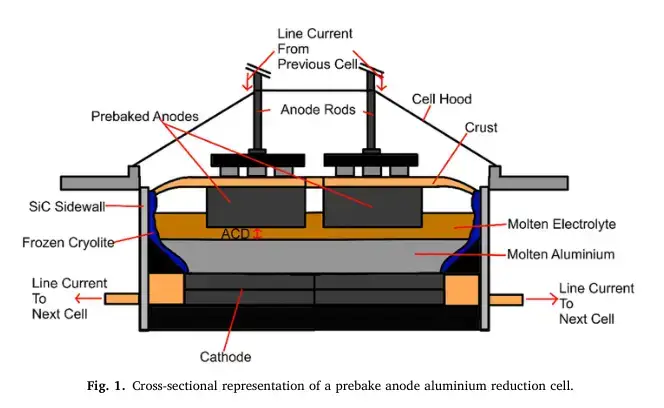
PDF page 2, visual region 1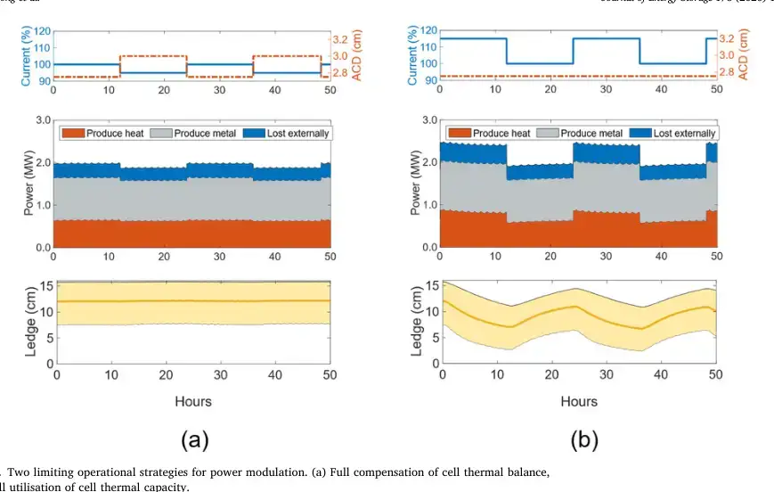
PDF page 3, visual region 1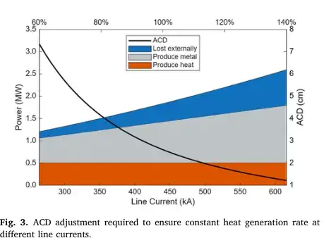
PDF page 3, visual region 2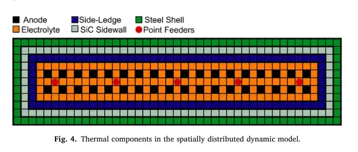
PDF page 4, visual region 1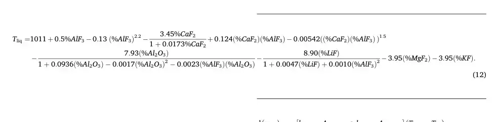
PDF page 5, visual region 1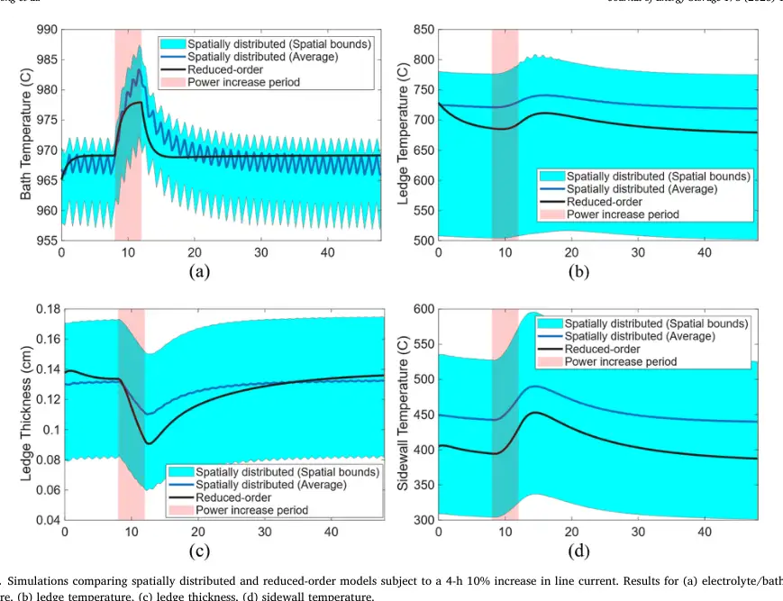
PDF page 6, visual region 1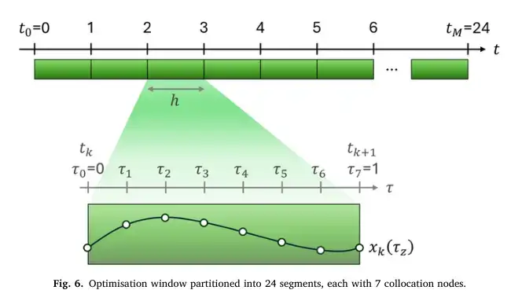
PDF page 8, visual region 1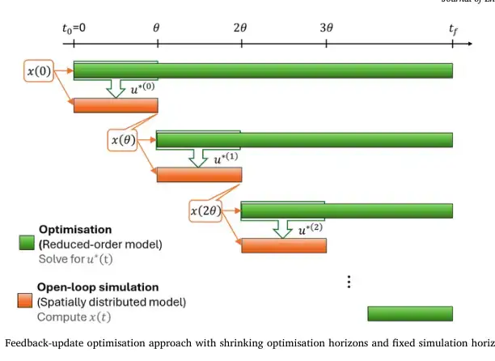
PDF page 9, visual region 1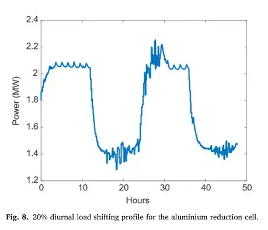
PDF page 10, visual region 1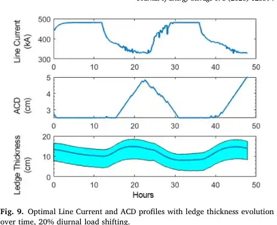
PDF page 10, visual region 2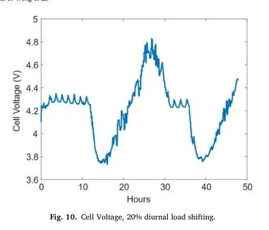
PDF page 11, visual region 1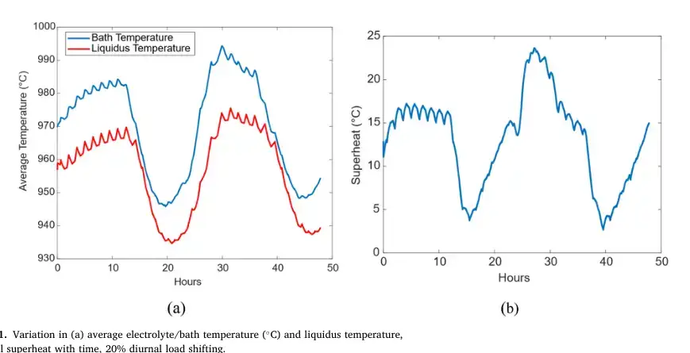
PDF page 11, visual region 2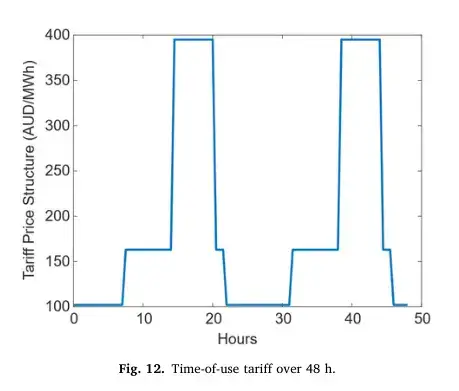
PDF page 11, visual region 3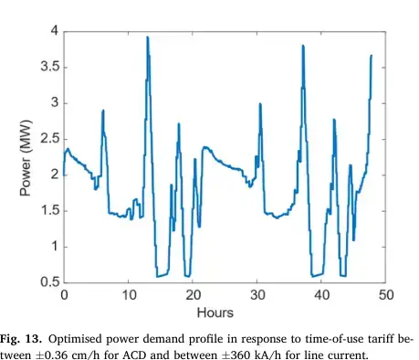
PDF page 12, visual region 1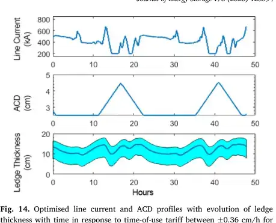
PDF page 12, visual region 2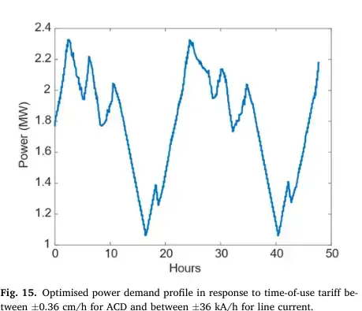
PDF page 12, visual region 3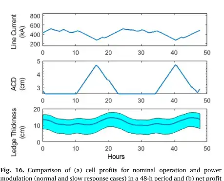
PDF page 12, visual region 4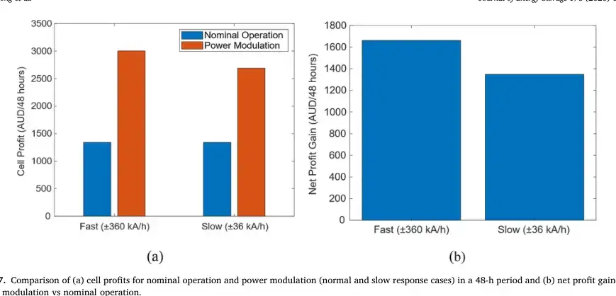
PDF page 13, visual region 1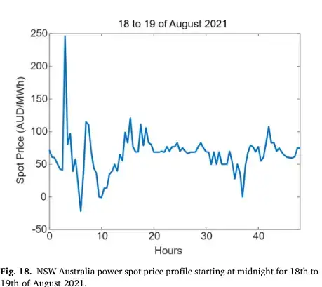
PDF page 13, visual region 2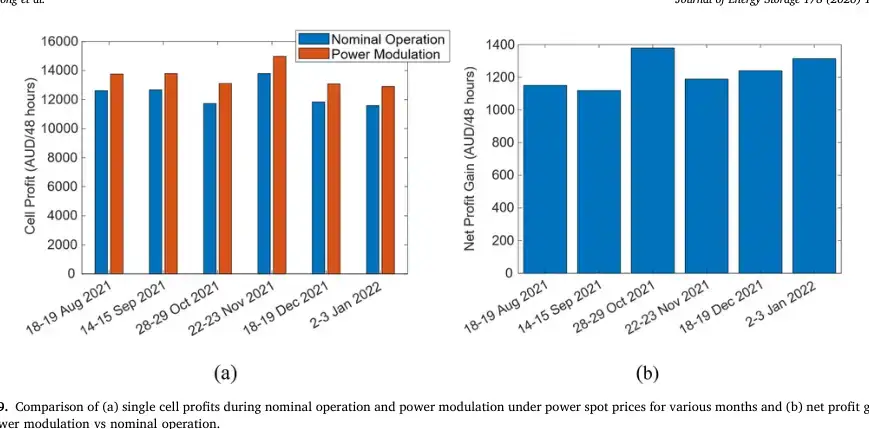
PDF page 14, visual region 1